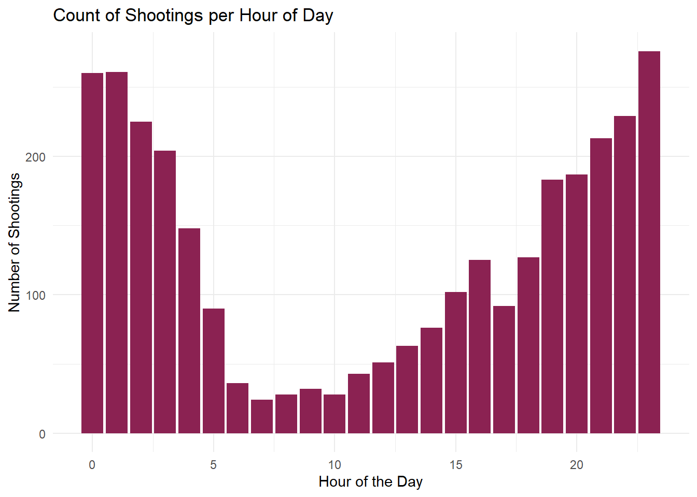
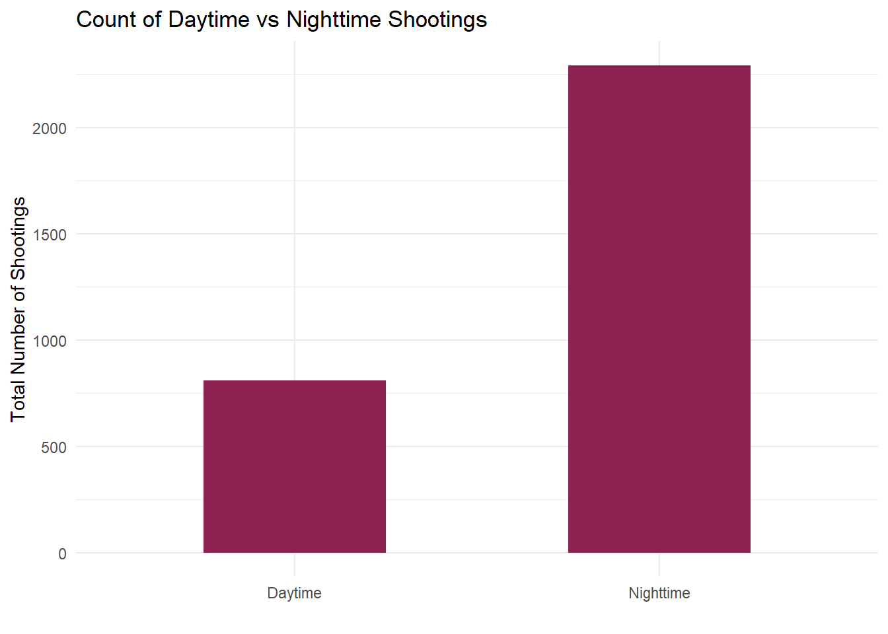
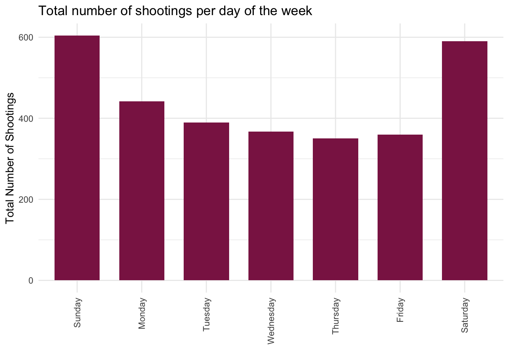
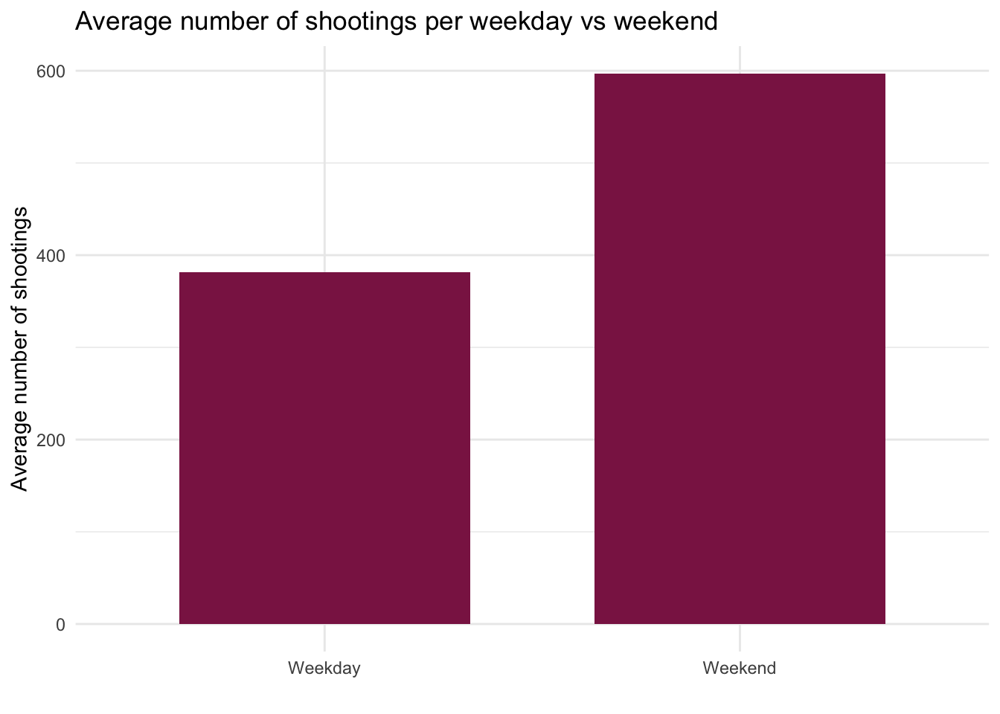
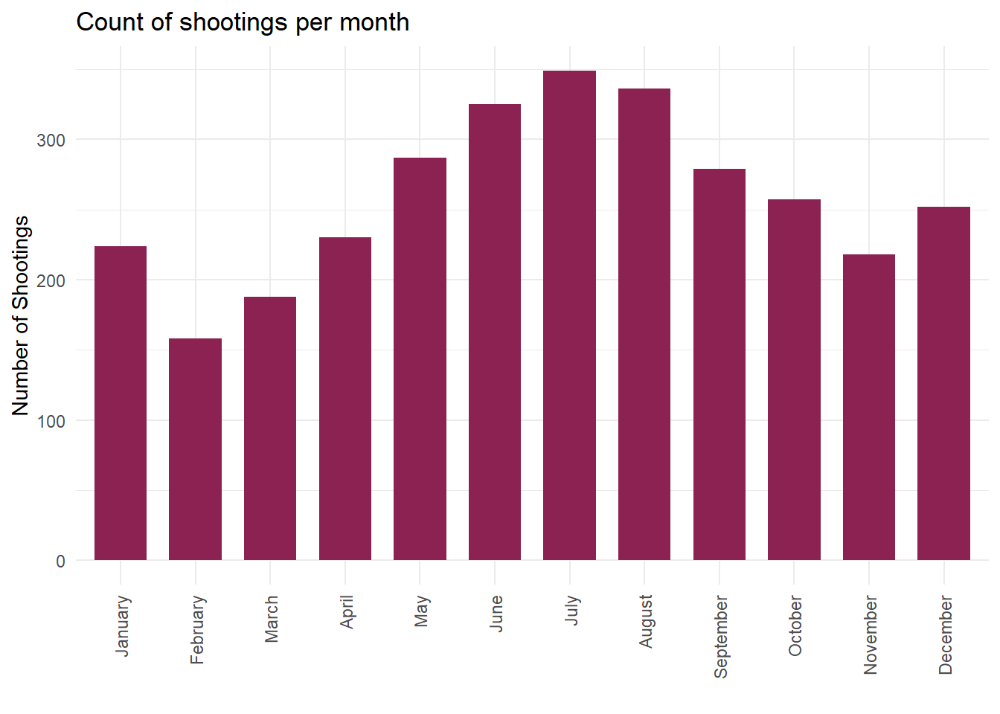
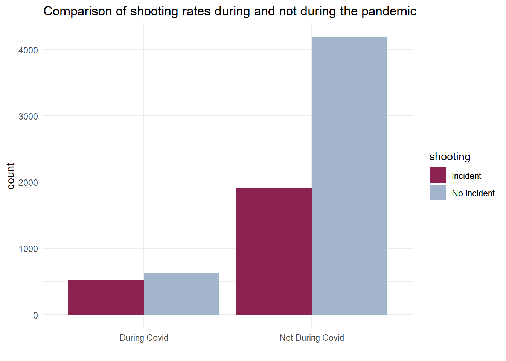

Time Analysis
Social conditions impact whether or not shootings occur, and this can be seen when analyzing when the shooting took place– whether that be hour of the day, day of the week, month of the year, or the year itself.

Effect of the time of day
Do we see more shootings during the day or night?
# Code setup, included in this block for brevity
library(tidyverse)
library(rvest)
library(httr)
# Importing data:
shooting_h <- read_csv("./Data Folder/Shooting_Historic.csv") %>%
janitor::clean_names()
shooting_2025 <- read_csv("./Data Folder/Shooting_2025.csv") %>%
janitor::clean_names() %>%
mutate(statistical_murder_flag = case_match(statistical_murder_flag,
"N" ~ FALSE,
"Y" ~ TRUE))
weather <- read_csv("./Data Folder/Weather.csv") %>%
janitor::clean_names()
holidays <- readxl::read_excel("./Data Folder/Holidays.xlsx")
# Merging and tidying shooting data:
shooting <- bind_rows(shooting_2025, shooting_h) %>%
separate_wider_delim(occur_date, delim = "/", names_sep = ".") %>%
rename(
month = occur_date.1,
day = occur_date.2,
year = occur_date.3,
time = occur_time
) %>%
mutate(
month = case_match(month,
"01" ~ "January",
"02" ~ "February",
"03" ~ "March",
"04" ~ "April",
"05" ~ "May",
"06" ~ "June",
"07" ~ "July",
"08" ~ "August",
"09" ~ "September",
"10" ~ "October",
"11" ~ "November",
"12" ~ "December"),
day = as.numeric(day),
year = as.numeric(year)) %>%
distinct(incident_key, .keep_all = TRUE) %>%
filter(boro == "MANHATTAN")
# creating a version with multiple daily incidents:
shooting_d <- bind_rows(shooting_2025, shooting_h) %>%
separate_wider_delim(occur_date, delim = "/", names_sep = ".") %>%
rename(
month = occur_date.1,
day = occur_date.2,
year = occur_date.3,
time = occur_time
) %>%
mutate(
month = case_match(month,
"01" ~ "January",
"02" ~ "February",
"03" ~ "March",
"04" ~ "April",
"05" ~ "May",
"06" ~ "June",
"07" ~ "July",
"08" ~ "August",
"09" ~ "September",
"10" ~ "October",
"11" ~ "November",
"12" ~ "December"),
day = as.numeric(day),
year = as.numeric(year)) %>%
filter(boro == "MANHATTAN")
# ran once to pull table from website
# url = "https://newyorkcityphotosafari.com/blog/sunrise-sunset-times-in-nyc.html"
# daylight <- read_html(url) %>%
# html_table() %>%
# as.data.frame() %>%
# janitor::clean_names()
# write.table(daylight, file = "./Data Folder/Daylight_Hours.txt", quote = F, row.names = F, col.names = T, sep = "\t")
# uses the table grabbed above
daylight <- read.table("./Data Folder/Daylight_Hours.txt", header = T, sep = '\t') %>%
rename(day = var_1) %>%
pivot_longer(
jan:dec,
names_to = "month",
values_to = "time"
) %>%
separate_wider_delim(time, delim = "/", names_sep = "_") %>%
rename(
sunrise = time_1,
sunset = time_2
) %>%
mutate(
month = case_match(month,
"jan" ~ "January",
"feb" ~ "February",
"mar" ~ "March",
"apr" ~ "April",
"may" ~ "May",
"jun" ~ "June",
"jul" ~ "July",
"aug" ~ "August",
"sep" ~ "September",
"oct" ~ "October",
"nov" ~ "November",
"dec" ~ "December")
)
# Creates a variable for day/night
daylight_shooting <- left_join(shooting, daylight, by = c("month", "day")) %>%
separate_wider_delim(time, delim = ":", names_sep = "_") %>%
separate_wider_delim(sunrise:sunset, delim = ":", names_sep = "_") %>%
rename(
hour = time_1,
minute = time_2,
sunrise_hour = sunrise_1,
sunrise_minute = sunrise_2,
sunset_hour = sunset_1,
sunset_minute = sunset_2
) %>%
select(-time_3) %>%
mutate(
hour = as.numeric(hour),
minute = as.numeric(minute),
sunrise_minute = as.numeric(sunrise_minute),
sunrise_hour = as.numeric(sunrise_hour),
sunset_minute = na_if(sunset_minute, ""),
sunset_minute = as.numeric(sunset_minute),
sunset_minute = replace_na(sunset_minute, 0),
sunset_hour = as.numeric(sunset_hour),
sunset_hour = sunset_hour + 12,
daylight = case_when(
hour > sunrise_hour & hour < sunset_hour ~ TRUE,
hour == sunrise_hour & minute >= sunrise_minute ~ TRUE,
hour == sunset_hour & minute <= sunset_minute ~ TRUE
),
daylight = case_match(daylight,
TRUE ~ "Daytime",
NA ~ "Nighttime"
)
) %>%
select(incident_key, month, day, year, hour, minute, sunrise_hour, sunrise_minute, sunset_hour, sunset_minute, daylight, everything())
# Plot of shootings per hour of the day
plot_daylight_hour <- daylight_shooting %>%
ggplot(aes(x = hour)) +
geom_bar(fill = "violetred4") +
theme_minimal() +
xlab("Hour of the Day") +
ylab("Number of Shootings") +
ggtitle("Count of Shootings per Hour of Day")
plot_daylight_hour
It looks like we do see a lot more shootings during the night, and a noticeable dip in shootings during typical working day hours.
We can test this further by examining whether more shootings happen during the night (defined by the sunset-sunrise period) than during the day:
# Plot of day/night shootings in general
plot_daylight_yn <- daylight_shooting %>%
ggplot(aes(x = daylight)) +
geom_bar(fill = "violetred4", width = 0.5) +
theme_minimal() +
ylab("Total Number of Shootings") +
xlab("") +
ggtitle("Count of Daytime vs Nighttime Shootings")
plot_daylight_yn
It does look like there is a significant difference in daytime vs nighttime shootings.
We can confirm whether this is statistically true using a proportion test:
daylight_count <- daylight_shooting %>%
count(daylight) %>%
pivot_wider(
names_from = daylight,
values_from = n
) %>%
mutate(
total = Daytime + Nighttime
)
daylight_test <- prop.test(x = pull(daylight_count, Nighttime),
n = pull(daylight_count, total)) %>%
broom::tidy() %>%
select(estimate, p.value)
knitr::kable(daylight_test, digits = 2, col.names = c("Proportion of Nighttime to Total", "P Value"))| Proportion of Nighttime to Total | P Value |
|---|---|
| 0.74 | 0 |
As we can see from a p-value of 0, which is below our significance level of 0.05, the proportion of shootings that happen at night compared to the total is significantly higher than an even ratio of 1 nighttime shooting per 1 daytime shooting. This indicates that we do in fact see a significantly higher number of shootings occur at night than we do during the day.
Effect of the day of the week
Do we see more shootings during the weekend than during the weekdays?
#' Read in calendar
#'
#' @param year Relevant sheet name
#' @param range Range for the relevant month
#'
#' @returns Formatted month dates for the provided year and month
read_calendar = function(year, month, range) {
sheet_name = as.character(year)
range = as.character(range)
month = as.character(month)
func_cal <- readxl::read_xlsx("./Data Folder/Calendar_AllYears.xlsx", range = range, sheet = sheet_name) %>%
janitor::clean_names() %>%
rename(
Sunday = s_1,
Monday = m,
Tuesday = t_3,
Wednesday = w,
Thursday = t_5,
Friday = f,
Saturday = s_7
) %>%
pivot_longer(
Sunday:Saturday,
names_to = "day_of_week",
values_to = "day"
) %>%
drop_na(day) %>%
mutate(
month = month,
year = year
)
func_cal
}
#' Create a yearly calendar
#'
#' @param year Relevant sheet name
#'
#' @returns Full calendar for the provided year
create_yearly_calendar = function(year) {
year = as.character(year)
func_cal <- bind_rows(
read_calendar(year = year, month = "January", range = "A3:G9"),
read_calendar(year = year, month = "February", range = "I3:O9"),
read_calendar(year = year, month = "March", range = "Q3:W9"),
read_calendar(year = year, month = "April", range = "A12:G18"),
read_calendar(year = year, month = "May", range = "I12:O18"),
read_calendar(year = year, month = "June", range = "Q12:W18"),
read_calendar(year = year, month = "July", range = "A21:G27"),
read_calendar(year = year, month = "August", range = "I21:O27"),
read_calendar(year = year, month = "September", range = "Q21:W27"),
read_calendar(year = year, month = "October", range = "A30:G36"),
read_calendar(year = year, month = "November", range = "I30:O36"),
read_calendar(year = year, month = "December", range = "Q30:W36")
)
}
#' Create a calendar with all provided years
#'
#' @param year_list Relevant sheet names
#'
#' @returns A calendar with all years from indicated sheets
create_full_calendar = function(year_list) {
output <- tibble(
day_of_week = NA,
day = NA,
month = NA,
year = NA
)
for (i in 1:length(year_list)) {
output <- bind_rows(
output,
create_yearly_calendar(year_list[[i]])
)
}
output <- output %>% drop_na(day)
}
calendar <- create_full_calendar(2006:2025) %>%
mutate(
day = as.numeric(day),
year = as.numeric(year)
)
# Merge with shootings:
calendar_shooting <- left_join(shooting, calendar, by = c("month", "day", "year")) %>%
mutate(
weekend = case_when(
day_of_week == "Sunday" ~ TRUE,
day_of_week == "Saturday" ~ TRUE
),
weekend = case_match(weekend,
TRUE ~ "Weekend",
NA ~ "Weekday"
),
day_of_week = as.factor(day_of_week),
day_of_week = fct_relevel(day_of_week, c("Sunday", "Monday", "Tuesday", "Wednesday", "Thursday", "Friday"))
)
plot_calendar_alldays <- calendar_shooting %>%
ggplot(aes(x = day_of_week)) +
geom_bar(fill = "violetred4", width = 0.7) +
theme_minimal() +
theme(axis.text.x = element_text(angle = 90, vjust = 0.5, hjust=1)) +
xlab("") +
ylab("Total Number of Shootings") +
ggtitle("Total number of shootings per day of the week")
plot_calendar_alldays
We do see spikes in shooting counts during the weekends as opposed to the weekdays.
This can be further tested by examining average shooting counts during weekends and weekdays and ignoring the specific days of the week:
plot_calendar_weekend <- calendar_shooting %>%
count(weekend) %>%
pivot_wider(
names_from = weekend,
values_from = n
) %>%
mutate(
Weekday = Weekday / 5,
Weekend = Weekend / 2
) %>%
pivot_longer(
Weekday:Weekend,
names_to = "weekend",
values_to = "n"
) %>%
ggplot(aes(x = weekend, y = n)) +
geom_bar(stat = "identity", fill = "violetred4", width = 0.7) +
theme_minimal() +
xlab("") +
ylab("Average number of shootings") +
ggtitle("Average number of shootings per weekday vs weekend")
plot_calendar_weekend
It does look like, after averaging by the number of weekend or weekday days, the weekends do see a higher number of shootings than the weekdays.
We can confirm whether this is statistically true using a proportion test:
calendar_count <- calendar_shooting %>%
count(weekend) %>%
pivot_wider(
names_from = weekend,
values_from = n
) %>%
mutate(
Weekday = Weekday / 5,
Weekend = Weekend / 2
) %>%
mutate(
total = Weekday + Weekend
)
calendar_test <- prop.test(x = pull(calendar_count, Weekend),
n = pull(calendar_count, total)) %>%
broom::tidy() %>%
select(estimate, p.value)
knitr::kable(calendar_test, digits = 2, col.names = c("Proportion of Weekend to Total", "P Value"))| Proportion of Weekend to Total | P Value |
|---|---|
| 0.61 | 0 |
As we can see from a p-value of 0, which is below our significance level of 0.05, the proportion of shootings that happen during the weekend compared to the full week is significantly higher than an even ratio of 1 average weekend shooting per 1 average weekday shooting. This indicates that we do in fact see a significantly higher number of shootings occur over the weekend than we do during the rest of the week.
Effect of the seasons
Do shooting rates differ between months?
plot_daylight_month <- shooting %>%
mutate(
month = as.factor(month),
month = fct_relevel(month, c("January", "February", "March", "April", "May", "June", "July", "August", "September", "October", "November", "December"))) %>%
ggplot(aes(x = month)) +
geom_bar(fill = "violetred4", width = 0.7) +
theme_minimal() +
theme(axis.text.x = element_text(angle = 90, vjust = 0.5, hjust=1)) +
xlab("") +
ylab("Number of Shootings") +
ggtitle("Count of shootings per month")
plot_daylight_month
It looks like more shootings tend to happen during holiday periods (December-January and June-August) than during the rest of the year, and more tend to happen during the warmer months than during the colder months.
Do we see this reflected in a temperature plot?
weather <- weather %>%
separate_wider_delim(date, delim = "-", names_sep = "_") %>%
rename(
year = date_1,
month = date_2,
day = date_3
) %>%
mutate(
month = case_match(month,
"01" ~ "January",
"02" ~ "February",
"03" ~ "March",
"04" ~ "April",
"05" ~ "May",
"06" ~ "June",
"07" ~ "July",
"08" ~ "August",
"09" ~ "September",
"10" ~ "October",
"11" ~ "November",
"12" ~ "December"),
day = as.numeric(day),
year = as.numeric(year)) %>%
filter(year >= 2006) %>%
select(name, month, day, year, prcp, prcp_attributes, tmax, tmin, latitude, longitude)
# Merging weather and shooting
weather_shooting <- left_join(shooting, weather, by = c("month", "day", "year"))
# Plot
plot_temp_shoot_hist <- weather_shooting %>%
mutate(tmax = tmax / 10) %>%
ggplot(aes(x = tmax)) +
geom_histogram(fill = "violetred4") +
theme_minimal() +
xlab("Maximum daily temperature (C)") +
ylab("Total shooting count") +
ggtitle("Histogram of total shooting count compared to maximum daily temperature")
plot_temp_shoot_hist
It looks like we can see two spikes at approximately 10 degrees Celsius (50 degrees Fahrenheit) and 28 degrees celsius (82 degrees Fahrenheit). This does not reflect the small spike seen during December and January above, but it confirms the overall trend that more shootings tend to happen during the summer, which has warmer weather, than during the rest of the year.
Effect of the COVID-19 pandemic
Have shooting rates changed over the years, and did the COVID-19 pandemic impact shooting rates at all?
plot_covid_yearly <- shooting %>%
filter(year != 2025) %>%
ggplot(aes(x = year)) +
geom_histogram(bins = 19, color = "violetred4", fill = "violetred4") +
theme_minimal() +
ylab("Number of Shootings") +
xlab("Year") +
ggtitle("Count of shootings per year")
plot_covid_yearly
When looking at the years alone, we can see that there is a decline in shooting rates between 2006 and 2019, at which point there is a spike in shooting rates that has not yet recovered to pre-pandemic rates.
This suggests that there have been more shootings during the COVID-19 pandemic than otherwise, which we can compare directly using this plot:
# march 11 2020: declared pandemic by WHO
# may 5 2023: end of pandemic declared by WHO
pandemic_shooting <- left_join(weather, shooting, by = c("month", "day", "year")) %>%
select(-c(name, prcp, prcp_attributes, tmax, tmin, latitude.x, longitude.x)) %>%
group_by(year, month, day) %>%
slice_head() %>%
ungroup() %>%
mutate(
shooting = incident_key > 0,
shooting = case_match(shooting,
TRUE ~ "Incident",
NA ~ "No Incident"),
month = case_match(month,
"January" ~ 1,
"February" ~ 2,
"March" ~ 3,
"April" ~ 4,
"May" ~ 5,
"June" ~ 6,
"July" ~ 7,
"August" ~ 8,
"September" ~ 9,
"October" ~ 10,
"November" ~ 11,
"December" ~ 12),
covid = case_when(
year == 2020 & month > 3 ~ TRUE,
year == 2020 & month == 3 & day >= 11 ~ TRUE,
year == 2021 ~ TRUE,
year == 2022 ~ TRUE,
year == 2023 & month < 5 ~ TRUE,
year == 2023 & month == 5 & day <= 5 ~ TRUE
),
covid = case_match(covid,
TRUE ~ "During Covid",
NA ~ "Not During Covid"),
month = case_match(month,
1 ~ "January",
2 ~ "February",
3 ~ "March",
4 ~ "April",
5 ~ "May",
6 ~ "June",
7 ~ "July",
8 ~ "August",
9 ~ "September",
10 ~ "October",
11 ~ "November",
12 ~ "December")
)
plot_covid_yn <- pandemic_shooting %>%
ggplot(aes(x = covid, fill = shooting)) +
geom_bar(position = position_dodge()) +
theme_minimal() +
scale_fill_manual(values = c("violetred4", "lightsteelblue3")) +
xlab("") +
ggtitle("Comparison of shooting rates during and not during the pandemic")
plot_covid_yn
Visually, it looks like there is a much higher proportion of shootings during the COVID-19 pandemic than not.
We can test whether this is statistically true using a two-sample test of proportions:
# Creating counts for the test
pandemic_count <- pandemic_shooting %>%
group_by(covid) %>%
count(shooting) %>%
pivot_wider(
names_from = covid,
values_from = n
) %>%
rename(
"covid" = "During Covid",
"not_covid" = "Not During Covid"
)
# Two-sample test of proportions
pandemic_test <- prop.test(x = pull(pandemic_count, covid),
n = pull(pandemic_count, not_covid),
alternative = "greater") %>%
broom::tidy() %>%
select(estimate1, estimate2, p.value)
knitr::kable(pandemic_test, digits = 2, col.names = c("During Covid Proportion", "Not During Covid Proportion", "P Value"))| During Covid Proportion | Not During Covid Proportion | P Value |
|---|---|---|
| 0.27 | 0.15 | 0 |
As we can see from a p-value of 0, which is below our significance level of 0.05, the proportion of shootings during the COVID-19 pandemic is significantly higher than the proportion of shootings that are not during the COVID-19 pandemic. This indicates that we did in fact see a spike in shootings during this time, as was shown by the histogram above.
In Conclusion

In conclusion, we see a trend in shootings where they tend to occur at night, during the weekend, and during periods of the year (the winter and the summer) when vacations/time off work are more likely to occur. This indicates that, temporally, shootings are far more likely to occur outside of standard working hours (9am - 5pm on weekdays), and that trends in these areas are based on when individuals are either occupied or when they have free time. It is likely that the temporal pattern of shootings is the result, and not the cause, of factors that influence whether a shooting takes place. The spike in shootings during the COVID-19 pandemic supports this theory, as there was an increase both in those who became unemployed and those who started working from home/saw their working hours reduced, causing an increase both in free time and in the shooting rate. Future testing to determine whether this theory is accurate could focus on the interpersonal element of shootings and in what circumstances they took place, and whether those circumstances are connected to that individual’s free time.